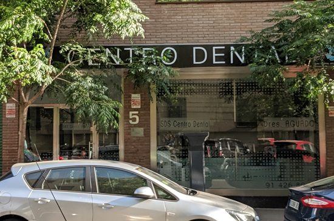

“No tengo tiempo entre el trabajo y todo lo demás.”
En SDS Chamberí: estamos junto al metro de Iglesia, con horario de mañana y tarde y reserva online en un minuto.
Seamos sinceros
Te ponemos fácil dar el paso.
“No tengo tiempo entre el trabajo y todo lo demás.”
En SDS Chamberí: estamos junto al metro de Iglesia, con horario de mañana y tarde y reserva online en un minuto.
“Me da miedo el presupuesto.”
En SDS Chamberí: la revisión es gratis y el plan va por escrito, con precio cerrado.
“Ya me han dado un presupuesto de implantes y no me fío.”
En SDS Chamberí: tráelo y te damos una segunda opinión sincera, sin coste.
Nuevos pacientes
En 40 minutos sabrás cómo está tu boca, qué necesitas y cuánto cuesta. Con la experiencia de una clínica con más de tres décadas en el barrio. Gratis.
Quedan 12 plazas en este mes
Tu tranquilidad, por escrito
Lo que firmas es lo que pagas. Los imprevistos corren de nuestra cuenta.
Nuestros pacientes son únicos y así los tratamos: con tiempo y con explicaciones.
Si te hacemos esperar más de 15 minutos, tu próxima limpieza es gratis.
Tratamientos
Todas las especialidades de la odontología y la estética dental en Chamberí.

Implantes con la experiencia de una clínica de referencia en Chamberí.
Quiero valorar mi caso →
Brackets y ortodoncia invisible para niños y adultos.
Quiero valorar mi caso →Revisiones, limpiezas y empastes. Lo que más previene.
Reservar valoración →Salvamos tu diente con un tratamiento de conductos.
Reservar valoración →Prótesis fijas y removibles hechas a medida.
Reservar valoración →Blanqueamiento y carillas.
Reservar valoración →Quién te va a atender
Un equipo de dentistas expertos en todas las especialidades, con la tradición de los Doctores Aguado.
Fundador · Médico dentista
Fundador
Así de fácil
Elige día y hora online o llámanos. Te confirmamos la cita por teléfono.
Exploración y radiografía digital. Te explicamos todo con imágenes de tu propia boca.
Te llevas tu plan por escrito con el precio total y la cuota mensual. Sin presión y sin letra pequeña.


La clínica
Entre los metros de Iglesia, Rubén Darío y Bilbao, en la zona de Almagro.
Financiación
Que el dinero no sea la razón para posponer tu salud. Calcula aquí cuánto pagarías al mes y en tu primera visita te damos la cifra exacta.
Financiación sujeta a aprobación de la entidad financiera. Cálculo orientativo sin intereses.
Opiniones
Lee lo que opinan de nosotros en Google antes de venir.
Preguntas frecuentes
¿Tienes otra duda? Llámanos al 914 268 071 y te la resolvemos en un minuto.
No hay trampa. Preferimos que nos conozcas sin riesgo: si te gusta cómo trabajamos, te quedarás con nosotros muchos años. Incluye exploración completa, radiografía digital y un plan por escrito con precio cerrado.
No. Te llevas tu plan y tu presupuesto por escrito y decides tú, cuando quieras. Sin llamadas insistentes.
Que el presupuesto que firmas incluye todo lo necesario para tu tratamiento. Si aparece algo que no estaba previsto, el sobrecoste lo asumimos nosotros.
Sí. Ofrecemos financiación, sujeta a aprobación. En la primera visita te calculamos tu cuota exacta.
Atendemos con cita previa. Puedes elegir día y hora directamente en esta web y te llamamos para confirmarla.
Reserva online · 1 minuto
Quedan 12 plazas en este mes
Horario: con cita previa
¿Prefieres llamar? 914 268 071
Dónde estamos
Antes de irte
Exploración, radiografía y plan con precio cerrado por 0 €. Quedan 12 plazas en este mes.
Sí, quiero mi plaza